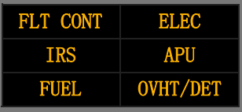
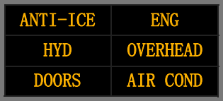

1 主火警警告(FIRE WARN)灯
亮（红色）- 表明在下列一个或几个部位有火警警告（或系统测试）:
• 发动机
• APU
• 主轮舱
• 货舱
相关的音响警报包括：
• 火警铃响
• 如果在地面，远处的APU火警警告喇叭响。
按压 - 使两个主火警警告（FIRE WARN）灯熄灭
• 使火警铃止响
• 使远处的APU火警警告喇叭止响
• 使系统重置，用于其他警告。
Note: 按下过热/防火面板上的火警铃切断电门，也会有同样的效果。
2 主警戒（MASTER CAUTION）指示灯
亮（琥珀色）- 系统信号牌亮。
按压 - 熄灭两个主警戒（MASTER CAUTION）指示灯
• 系统信号牌灯熄灭
• 使系统重置，用于其他主警戒状况。
3 系统信号牌面板
亮（琥珀色) - 相应的系统面板上的琥珀色灯亮，包括顶板、后顶板或防火面板上的系统。
熄灭 - 按下任一个主警戒（MASTER CAUTION）指示灯。
再现 - 按下并松开任一系统信号牌板
• 如果存在主警戒条件，相应的系统信号牌及主警戒（MASTERCAUTION）指示灯亮
• 在再现过程中，某些备用系统的单一故障或一些简单的故障会引起系统信号牌灯亮。
当按下主警戒（MASTER CAUTION）指示灯后，系统信号牌灯会熄灭。
介绍
音响、触觉和目视警告信号提醒飞行机组出现了某些情况,需要在操作飞机时采取措施或引起注意。
信号的特征根据情况的紧急或危险程度而有所不同。
音响、触觉和目视信号可单独使用或共同使用以同步提供与情况性质相关的警告和信息。
需要立即引起飞行机组注意的情况由飞行员主要视线区域内红色警告灯指示。
这些灯光指示发动机、轮舱、货舱或APU火警；自动驾驶、自动油门断开；起落架不安全情况。
需要及时引起飞行机组注意的情况由琥珀色警戒灯指示。
蓝色灯给飞行机组提供电源可用性、活门位置、设备状态以及乘务组或地面人员的通话情况。
蓝灯用以提示，不需要机组马上注意。某些系统蓝灯明亮指示转换状态，如活门或组件改变位置，当达到所需的形态后再恢复成暗蓝色。
绿灯指示完全放出形态，如起落架和前缘装置。
失速警告由每个驾驶杆上的抖杆器提供。
各种音响信号提示机组注意警告或警戒。
空速限制的音响警告是咔嗒声，自动驾驶断开警告为谐音警告，起飞形态和座舱高度警告为间歇性的喇叭声，起落架位置警告为稳定的喇叭声。
火警则由火警警铃提示。
近地警告和告警、风切变警告和告警由语音警告提示。
通常，当相关的非正常情况不再存在时，音响警告自动停止
主火警警告灯
出现任何火警情况时，两个主火警警告（FIRE WARN）灯亮。
只要存在火警情况，灯就会持续亮。
按压任一主火警警告灯或火警铃切断电门可使两个灯熄灭，停止警铃声并重置该系统，为以后出现火警情况时提供警告。
系统信号牌灯
两个系统信号牌灯面板位于遮光板上。
信号牌灯面板上只包括那些前顶板、后顶板和火警控制面板上的系统。
如果存在警戒状态，相应的系统信号牌及主警戒灯亮。
MEL(根据公司政策有所不同)。
修复期限（C），安装数量（12），放行所需数量（11），有O项程序。
操作程序（O）
1. 检查相应面板上相应系统的指示灯应是工作正常的。
2. 如果MASTER CAUTION灯亮而所有信号牌灯都不亮，则可认为带有"灯失效"挂牌的系统受影响。
3. 下降之前，检查相应面板上与失效的系统信号牌灯相关的系统指示灯。
| FLT CONT |  | ELEC |
|
LOW QUANTITY(油量低)
LOW PRESSURE(低压) FEEL DIFF PRESS(感觉压差) SPEED TRIM FAIL(速度配平失效) MACH TRIM FAIL(马赫配平失效) AUTO SLAT FAIL(自动缝翼失效) YAW DAMPER(偏航阻尼器) STBY RUD ON(备用方向舵接通) |
DRIVE(驱动)
STANDBY PWR OFF(备用电源断开) TRANSFER BUS OFF(转换汇流条断开) SOURCE OFF(源断开) TR UNIT(整流组件) BAT DISCHARGE(电瓶放电) ELEC(电气) |
|
| IRS | APU | |
| FAULT(故障）
ON DC(直流接通) DC FAIL(直流失效) [部分选型]GPS,ILS,GLS |
LOW OIL PRESSURE(滑油压力低)
FAULT(故障） OVERSPEED(超速) |
|
| FUEL | OVHT/DET | |
| LOW PRESSURE(低压)
FILTER BYPASS(油滤旁通) |
ENGINE 1 OVERHEAT(1号发动机过热)
ENGINE 2 OVERHEAT(2号发动机过热) APU DET INOP(APU探测器不工作) |
| ANTI-ICE |  | ENG |
| WINDOW OVERHEAT(风挡过热)
PROBE HEAT(探头加温) COWL ANTI-ICE(整流罩防冰) |
REVERSER(反推)
EEC ALTN MODE(EEC备用方式) ENGINE CONTROL(发动机控制) |
|
| HYD | OVERHEAD | |
| OVERHEAT(过热)
LOW PRESSURE(低压) |
EQUIPMENT COOLING
OFF(设备冷却关) EMER EXIT LIGHTS– NOT ARMED(紧急出口灯-未预位) FLIGHT RECORDER-OFF(飞行记录器关) PASS OXY–ON(旅客氧气接通) PSEU(临近电门电子组件) ELT(应急定位发射机) LAVATORY-SMOKE(盥洗室烟雾) |
|
| DOORS | AIR COND | |
| FWD/AFT ENTRY(前/后登机门)
EQUIP(设备舱门) FWD/AFT CARGO(前/后货舱门) FWD/AFT SERVICE(前/后勤务门) LEFT/RIGHT OVERWING(左/右翼上出口) |
DUAL BLEED(双引气)
WING-BODY OVERHEAT(翼身过热) BLEED TRIP OFF(引气跳开) AUTO FAIL(自动失效) OFF SCHED DESCENT(非计划下降) ZONE TEMP(区域温度) PACK(组件) HIGH ALTITUDE LANDING-INOP (高高度着陆-不工作) |